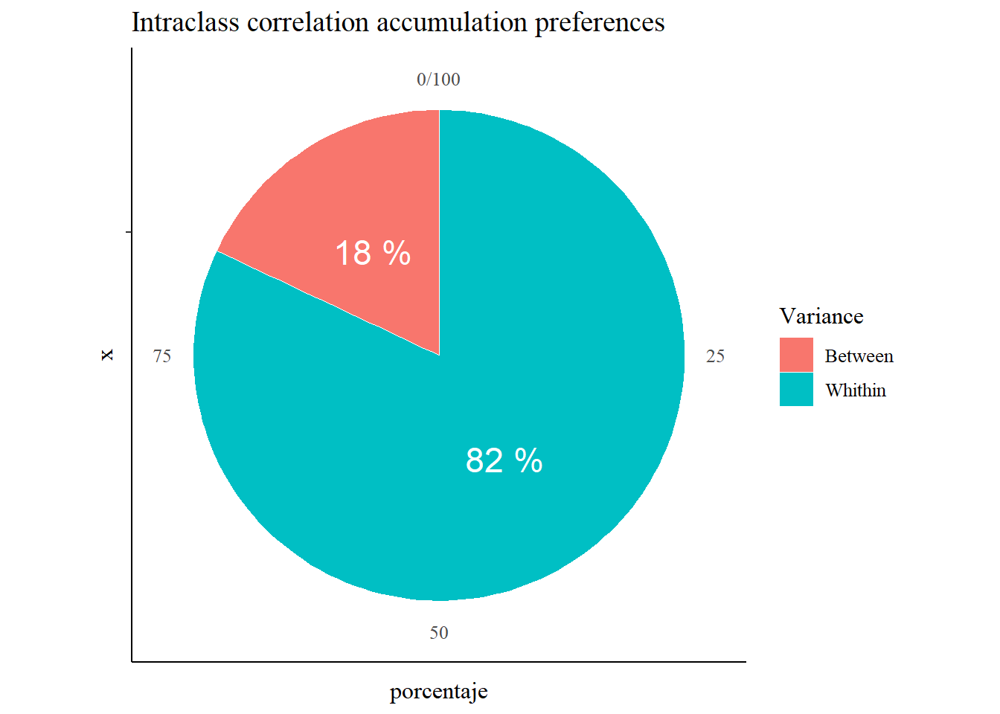
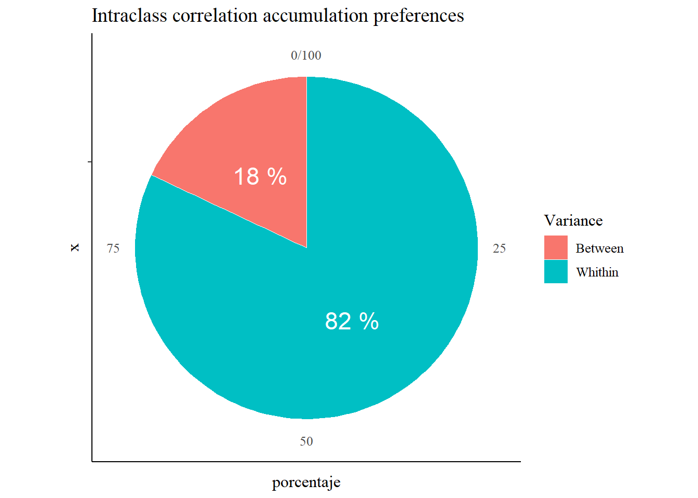
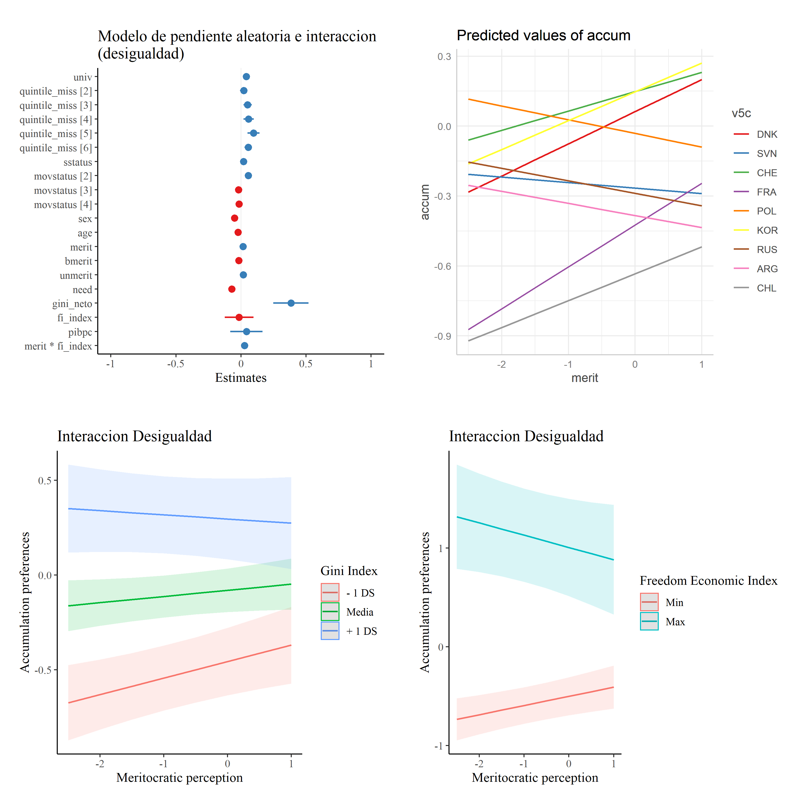

Meritocracy and distributive preferences ISSP
viernes 02 octubre 2020 4:46:45
In this document “Analysis B” the analyzes performed on the database created in data-prep are exposed.
The first section provides a multilevel analysis of the variables redistributive preferences and preferences for accumulation. Analysis of random slopes and interactions between levels are included.
The second section presents the robustness analyzes.
Libraries
library(sjPlot)
library(sjmisc) # several functions,ej read_stata
library(descr)
library(memisc) # codebook
library(psych) # cor2latex
library(corrplot) # graph correlations
library(lavaan)
library(stargazer)
library(semTools)
library(plyr) # count
library(dplyr)
library(car) # recode
library(ggplot2)
library(Hmisc)
library(tidyverse)
library(data.table)
library(stringr)
library(countrycode)
library(lme4)
library(texreg)
library(mice)
library(ggrepel) # for scatter labels in sjp.scatter
library(semPlot)
library(haven)
library(sjlabelled)
library(kableExtra)
library(ggeffects)
library(influence.ME)
library(lattice)Load data
load(file = "input/data/proc/redistrib.rda")
load(file = "input/data/proc/mer_pref.rda")
load("input/data/proc/redistrib.rda")
load("input/data/proc/getahead.rda")
load("input/data/proc/detearn.rda")1 Modelos Multinivel
1.1 Modelos nulos: correlacion intraclase.
load(file="input/data/proc/mer_pref.rda")
# Modelo nulo
results_0_redist = lmer(redist ~ 1 + (1| v5c), data = mer_pref, REML=F)
results_0_accum = lmer(accum ~ 1 + (1| v5c), data = mer_pref, REML=F)
htmlreg(list(results_0_redist,results_0_accum),
caption = "null model of Redistributive preferences and accumulation preferences",
custom.model.names = c("Redistributive", "Accumulation"),
caption.adove = T, star.symbol = "\\*") | Redistributive | Accumulation | |
|---|---|---|
| (Intercept) | -0.00 | -0.08 |
| (0.04) | (0.07) | |
| AIC | 95387.32 | 148985.41 |
| BIC | 95413.96 | 149012.05 |
| Log Likelihood | -47690.66 | -74489.71 |
| Num. obs. | 52995 | 52995 |
| Num. groups: v5c | 39 | 39 |
| Var: v5c (Intercept) | 0.06 | 0.21 |
| Var: Residual | 0.35 | 0.97 |
| ***p < 0.001; **p < 0.01; *p < 0.05 | ||
# Modelo nulo
# Correlacion intraclases accum
df<-data.frame(Variance=c("Between","Whithin"),
porcentaje=c(15,85))
ggplot(df,aes(x="",y=porcentaje, fill=Variance))+
geom_bar(stat = "identity",color="white")+
coord_polar(theta="y") +
geom_text(aes(label=paste(porcentaje, "%")),
position=position_stack(vjust=0.5),color="white",size=6)+
coord_polar(theta = "y") + ggtitle("Correlacion intraclase prederencias redistributivas")
reghelper::ICC(results_0_accum)## [1] 0.1788709df<-data.frame(Variance=c("Between","Whithin"),
porcentaje=c(18,82))
ggplot(df,aes(x="",y=porcentaje, fill=Variance))+
geom_bar(stat = "identity",color="white")+
coord_polar(theta="y") +
geom_text(aes(label=paste(porcentaje, "%")),
position=position_stack(vjust=0.5),color="white",size=6)+
coord_polar(theta = "y") + ggtitle("Correlacion intraclase prederencias redistributivas") 

Correlacion intraclase
Approximately 15% of the variance of redistributive preferences is found between countries
Approximately 18% of the variance of redistributive preferences is found between countries.
1.2 Redistributive Preference Models.
results_1_redist__1 = lmer(redist ~ gini_neto + fi_index + pibpc + 1 + (1| v5c), data = mer_pref, REML=F)
results_1_redist_3 = lmer(redist ~ merit + 1 + (1| v5c), data = mer_pref, REML=F)
results_1_redist_4 = lmer(redist ~ merit + bmerit + 1 + (1| v5c), data = mer_pref, REML=F)
results_1_redist_5 = lmer(redist ~ merit + bmerit + unmerit + 1 + (1| v5c), data = mer_pref, REML=F)
results_1_redist_6 = lmer(redist ~ merit + bmerit + unmerit + need + 1 + (1| v5c), data = mer_pref, REML=F)
results_1_redist_7 = lmer(redist ~ gini_neto + fi_index + pibpc + merit + bmerit + unmerit + need + 1 + (1| v5c), data = mer_pref, REML=F)
results_1_redist_9 = lmer(redist ~ gini_neto + fi_index + pibpc + merit + bmerit + unmerit + need + sstatus + as.factor(movstatus) + univ + as.factor(quintile_miss) + sex + age + 1 + (1| v5c), data = mer_pref, REML=F)
results_2_redist_macro_bv = lmer(redist ~ univ + as.factor(quintile_miss) + sstatus + as.factor(movstatus) + sex + age + merit + bmerit + unmerit + need + gini_neto + fi_index + pibpc + 1 + (1 + merit| v5c), data= mer_pref, REML=F)
results_3_redist_macro_bvi = lmer(redist ~ univ + as.factor(quintile_miss) + sstatus + as.factor(movstatus) + sex + age + merit + bmerit + unmerit + need + merit*gini_neto + fi_index + pibpc + 1 + (1 + merit| v5c), data = mer_pref, REML=F)htmlreg(list(results_1_redist__1, results_1_redist_3,results_1_redist_4,results_1_redist_5,results_1_redist_6,results_1_redist_7, results_1_redist_9, results_2_redist_macro_bv, results_3_redist_macro_bvi),
caption = "Redistributive preference models",
omit.coef = "(sstatus)|(movstatus)|(univ)|(quintile_miss)|(age)|(sex)",
custom.coef.names = c("Intercept", "Gini index", "Economic freedom index", "PIB per capita", "Meritocratic perception",
"Meritocratic preference", "Unmeritocratic Perception","Unmerit preference", "GINI x Merit-perception"),
caption.above = T,
star.symbol = "\\*",
center = T,
custom.note = "$***p <$ 0.001, $**p <$ 0.01, $*p <$ 0.05 <br> Since Model 6 control by subjetive status, mov subjetive status, Ed.univ, quintile_miss, age and sex") | Model 1 | Model 2 | Model 3 | Model 4 | Model 5 | Model 6 | Model 7 | Model 8 | Model 9 | |
|---|---|---|---|---|---|---|---|---|---|
| Intercept | 0.93* | -0.01 | -0.01 | -0.01 | -0.00 | 0.83* | 0.74 | 0.95** | 0.70 |
| (0.44) | (0.04) | (0.04) | (0.04) | (0.04) | (0.42) | (0.42) | (0.36) | (0.37) | |
| Gini index | -0.02** | -0.02*** | -0.02*** | -0.02*** | -0.01* | ||||
| (0.01) | (0.01) | (0.01) | (0.00) | (0.01) | |||||
| Economic freedom index | -0.03 | -0.01 | -0.00 | -0.03 | -0.03 | ||||
| (0.05) | (0.05) | (0.05) | (0.05) | (0.05) | |||||
| PIB per capita | -0.00*** | -0.00*** | -0.00** | -0.00 | -0.00 | ||||
| (0.00) | (0.00) | (0.00) | (0.00) | (0.00) | |||||
| Meritocratic perception | -0.00 | -0.07*** | -0.13*** | -0.06*** | -0.06*** | -0.05*** | -0.07** | -0.32*** | |
| (0.01) | (0.01) | (0.01) | (0.01) | (0.01) | (0.01) | (0.02) | (0.09) | ||
| Meritocratic preference | 0.12*** | 0.12*** | 0.03*** | 0.03*** | 0.03*** | 0.04*** | 0.04*** | ||
| (0.01) | (0.01) | (0.01) | (0.01) | (0.01) | (0.01) | (0.01) | |||
| Unmeritocratic Perception | 0.13*** | 0.06*** | 0.06*** | 0.07*** | 0.07*** | 0.07*** | |||
| (0.00) | (0.01) | (0.01) | (0.01) | (0.01) | (0.01) | ||||
| Unmerit preference | 0.16*** | 0.16*** | 0.15*** | 0.15*** | 0.15*** | ||||
| (0.00) | (0.00) | (0.00) | (0.00) | (0.00) | |||||
| GINI x Merit-perception | 0.01** | ||||||||
| (0.00) | |||||||||
| AIC | 98929.25 | 98939.98 | 98634.47 | 97978.12 | 96210.18 | 96201.81 | 91576.47 | 91180.85 | 91174.36 |
| BIC | 98982.74 | 98975.64 | 98679.05 | 98031.61 | 96272.59 | 96290.96 | 91771.66 | 91393.78 | 91396.16 |
| Log Likelihood | -49458.62 | -49465.99 | -49312.24 | -48983.06 | -48098.09 | -48090.90 | -45766.24 | -45566.42 | -45562.18 |
| Num. obs. | 55021 | 55021 | 55021 | 55021 | 55021 | 55021 | 52681 | 52681 | 52681 |
| Num. groups: v5c | 40 | 40 | 40 | 40 | 40 | 40 | 40 | 40 | 40 |
| Var: v5c (Intercept) | 0.04 | 0.06 | 0.06 | 0.05 | 0.05 | 0.04 | 0.04 | 0.04 | 0.04 |
| Var: Residual | 0.35 | 0.35 | 0.35 | 0.35 | 0.34 | 0.34 | 0.33 | 0.33 | 0.33 |
| Var: v5c merit | 0.01 | 0.01 | |||||||
| Cov: v5c (Intercept) merit | 0.02 | 0.01 | |||||||
|
\(***p <\) 0.001, \(**p <\) 0.01, \(*p <\) 0.05 Since Model 6 control by subjetive status, mov subjetive status, Ed.univ, quintile_miss, age and sex |
|||||||||
Macroeconomic variables: At the country level, both wealth and inequality have a negative effect on redistributive preferences. The wealth effect ceases to be significant when the slope is randomized and when inequality interacts with the meritocratic perception effect. For its part, the economic freedom index does not have an effect on meritocracy as it is controlled for inequality and wealth.
Meritocratic beliefs: the meritocratic perception variable does not have a significant effect on the redistributive preferences variable until it is controlled by meritocratic preferences, which have a positive effect on the preference for redistribution. This highlights the importance of differentiating perceptions and preferences in the measurement models, as they can have opposite effects on the same variable, canceling the significance of said effect. In substantive terms this indicates that what is important is the perception of distribution according to talent and effort, apart from the belief that the world should work like this. The effect of this variable grows again when controlling for non-meritocratic perceptions, but decreases considerably when incorporating the variable non-meritocratic preference of payment according to needs. This last variable is the one that has the greatest effect on redistributive preferences, which suggests that the preference for a state that promotes equality is related to the consideration of people’s needs when distributing resources.
Subjective status: it can be seen that both have a significant effect even according to a 99.9% confidence criterion. The effect of the subjective status variable is negative, that is, a person who considers himself in a high subjective position has a lower preference for redistribution. For its part, subjective mobility has a positive effect on redistributive preferences, when it is controlled by individual subjective status and meritocratic beliefs. Perhaps, contact with disadvantaged groups can generate greater empathy.
Demographic variables: These variables are all significant. Furthermore, their inclusion in the multilevel model does not nullify the significance of the substantive variables of the model. Among them, the income quintile variable stands out, according to which, belonging to the richest quintile implies a lower preference for redistribution.
By randomizing the slope between the perception of meritocracy and redistributive preferences significantly improves the model, which is due to the differences between countries regarding said relationship. As exemplified in the graph of random slopes, the relationships even change direction from one country to another.
By including the interaction between levels the model improves significantly. To some extent, what makes the slope of the relationship vary is the country’s inequality.
results_1_redist_dem = lmer(redist ~ univ + as.factor(quintile_miss) + sstatus + as.factor(movstatus) + sex + age + 1 + (1| v5c), data = mer_pref, REML=F)
results_1_redist_indsust = lmer(redist ~ univ + as.factor(quintile_miss) + sstatus + as.factor(movstatus) + sex + age + merit + bmerit + unmerit + need + 1 + (1| v5c), data = mer_pref, REML=F)
results_1_redist_macro = lmer(redist ~ univ + as.factor(quintile_miss) + sstatus + as.factor(movstatus) + sex + age + merit + bmerit + unmerit + need + gini_neto + fi_index + 1 + (1| v5c), data = mer_pref, REML=F)
results_2_redist_macro_bv = lmer(redist ~ univ + as.factor(quintile_miss) + sstatus + as.factor(movstatus) + sex + age + merit + bmerit + unmerit + need + gini_neto + fi_index + 1 + (1 + merit| v5c), data= mer_pref, REML=F)
results_3_redist_macro_bvi = lmer(redist ~ univ + as.factor(quintile_miss) + sstatus + as.factor(movstatus) + sex + age + merit + bmerit + unmerit + need + merit*gini_neto + fi_index + 1 + (1 + merit| v5c), data = mer_pref, REML=F)
results_3_redist_macro_bvi_2 = lmer(redist ~ univ + as.factor(quintile_miss) + sstatus + as.factor(movstatus) + sex + age + merit + bmerit + unmerit + need + merit*fi_index + gini_neto + 1 + (1 + merit| v5c), data = mer_pref, REML=F)
#htmlreg(list(results_1_redist_macro,results_2_redist_macro_bv, results_3_redist_macro_bvi,results_3_redist_macro_bvi_2), caption = "Pendiente aleatorea e interaccion entre niveles", omit.coef = "(sstatus)|(movstatus)|(univ)|(quintile_miss)|(age)|(sex)")results_3_redist_macro_bvi_efectplot <- sjPlot::plot_model(results_3_redist_macro_bvi, type="std", title = "Modelo final con predictores, pendiente aleatoria e interaccion.")
ggsave(results_3_redist_macro_bvi_efectplot, filename = "output/results/results_3_redist_macro_bvi_efectplot.png", width = 10, height = 10, dpi= "retina")
graf2=ggpredict(results_2_redist_macro_bv, terms = c("merit","v5c [DNK, SVN, CHE, FRA, POL, KOR, RUS, CHL, ARG]"), type="re")
pendiente_aleatoria_redistbv <- plot(graf2)
pendiente_aleatoria_redistbv
ggsave(pendiente_aleatoria_redistbv, filename = "output/results/pendiente_aleatoria_redistbv.png", width = 10, height = 10, dpi= "retina")
results_3_redist_macro_bvi_interacgini_meansd <- sjPlot::plot_model(results_3_redist_macro_bvi,
type = c("int"),
title = "Interaccion desigualdad",
mdrt.values = "meansd") + scale_color_discrete("Gini Index", labels = c("- 1 DS", "Media", "+ 1 DS")) + theme(legend.position = "bottom") + ylab("Redistributive preferences") + xlab("Meritocratic perception")
results_3_redist_macro_bvi_interacgini_minmax <- sjPlot::plot_model(results_3_redist_macro_bvi,
type = c("int"),
title = "Interaccion desigualdad", terms = c ("merit [-3,2]")) + scale_color_discrete("Gini Index", labels = c("Min", "Max")) + theme(legend.position = "bottom") + ylab("Redistributive preferences") + xlab("Meritocratic perception")
ggsave(plot_grid(list(results_3_redist_macro_bvi_efectplot, pendiente_aleatoria_redistbv,results_3_redist_macro_bvi_interacgini_meansd, results_3_redist_macro_bvi_interacgini_minmax) ,
margin = c(0.5,0.5,0.5,0.5),
tags = c(" ", " "," ", " ")),
filename = "output/results/results_3_redist_macro_bvi_interacgini.png", width = 10, height = 10, dpi= "retina")
#sjPlot::plot_model(results_3_redist_macro_bvi_2, type = c("int"), title = "Interaccion libertad economica", mdrt.values = "meansd")
Redistribution Models; Effects, Random Slopes, and Interactions
1.3 Preference Models for marketization (accu).
results_1_accum__1 = lmer(accum ~ gini_neto + fi_index + pibpc + 1 + (1| v5c), data = mer_pref, REML=F)
results_1_accum_3 = lmer(accum ~ merit + 1 + (1| v5c), data = mer_pref, REML=F)
results_1_accum_4 = lmer(accum ~ merit + bmerit + 1 + (1| v5c), data = mer_pref, REML=F)
results_1_accum_5 = lmer(accum ~ merit + bmerit + unmerit + 1 + (1| v5c), data = mer_pref, REML=F)
results_1_accum_6 = lmer(accum ~ merit + bmerit + unmerit + need + 1 + (1| v5c), data = mer_pref, REML=F)
results_1_accum_7 = lmer(accum ~ gini_neto + fi_index + pibpc + merit + bmerit + unmerit + need + 1 + (1| v5c), data = mer_pref, REML=F)
results_1_accum_8 = lmer(accum ~ gini_neto + fi_index + merit + bmerit + unmerit + need + sstatus + as.factor(movstatus) + 1 + (1| v5c), data = mer_pref, REML=F)
results_1_accum_9 = lmer(accum ~ gini_neto + fi_index + merit + bmerit + unmerit + need + sstatus + as.factor(movstatus) + univ + as.factor(quintile_miss) + sex + age + 1 + (1| v5c), data = mer_pref, REML=F)
results_1_accum_macro = lmer(accum ~ univ + as.factor(quintile_miss) + sstatus + as.factor(movstatus) + sex + age + merit + bmerit + unmerit + need + gini_neto + fi_index + pibpc + 1 + (1| v5c), data = mer_pref, REML=F)
results_2_accum_macro_bv = lmer(accum ~ univ + as.factor(quintile_miss) + sstatus + as.factor(movstatus) + sex + age + merit + bmerit + unmerit + need + gini_neto + fi_index + pibpc + 1 + (1 + merit| v5c), data = mer_pref, REML=F)
results_3_accum_macro_bvi = lmer(accum ~ univ + as.factor(quintile_miss) + sstatus + as.factor(movstatus) + sex + age + merit + bmerit + unmerit + need + gini_neto + merit*fi_index + pibpc + 1 + (1 + merit| v5c), data = mer_pref, REML=F)
results_3_accum_macro_bvi_2 = lmer(accum ~ univ + as.factor(quintile_miss) + sstatus + as.factor(movstatus) + sex + age + merit + bmerit + unmerit + need + fi_index + merit*gini_neto + pibpc + 1 + (1 + merit| v5c), data = mer_pref, REML=F)
#htmlreg(list(results_1_accum_macro,results_2_accum_macro_bv,results_3_accum_macro_bvi, results_3_accum_macro_bvi_2), star.symbol = "\\*")htmlreg(list(results_1_accum__1, results_1_accum_3,results_1_accum_4,results_1_accum_5,results_1_accum_6,results_1_accum_7, results_2_accum_macro_bv, results_3_accum_macro_bvi),
caption = "Accumulation preferences models",
omit.coef = "(sstatus)|(movstatus)|(univ)|(quintile_miss)|(age)|(sex)",
custom.coef.names = c("Intercept", "Gini index" , "Economic freedom index", "PIB per capita" , "Meritocratic perception",
"Meritocratic preference", "Unmeritocratic Perception","Unmerit preference", "Economic-freedom Merit-perception"),
caption.above = T,
star.symbol = "\\*",
center = T,
custom.note = "$***p <$ 0.001, $**p <$ 0.01, $*p <$ 0.05 <br> Since Model 6 control by subjetive status, mov subjetive status, Ed.univ, quintile_miss, age and sex") | Model 1 | Model 2 | Model 3 | Model 4 | Model 5 | Model 6 | Model 7 | Model 8 | |
|---|---|---|---|---|---|---|---|---|
| Intercept | -1.38 | -0.06 | -0.06 | -0.06 | -0.06 | -1.32 | -0.84 | -1.61* |
| (0.79) | (0.07) | (0.07) | (0.07) | (0.07) | (0.78) | (0.71) | (0.74) | |
| Gini index | 0.04*** | 0.04*** | 0.05*** | 0.05*** | ||||
| (0.01) | (0.01) | (0.01) | (0.01) | |||||
| Economic freedom index | -0.02 | -0.04 | -0.11 | -0.00 | ||||
| (0.10) | (0.10) | (0.09) | (0.09) | |||||
| PIB per capita | 0.00 | 0.00 | 0.00 | 0.00 | ||||
| (0.00) | (0.00) | (0.00) | (0.00) | |||||
| Meritocratic perception | 0.03*** | 0.09*** | 0.10*** | 0.04*** | 0.05*** | 0.05* | -0.65*** | |
| (0.01) | (0.01) | (0.01) | (0.01) | (0.01) | (0.02) | (0.19) | ||
| Meritocratic preference | -0.11*** | -0.11*** | -0.04*** | -0.04*** | -0.04*** | -0.04*** | ||
| (0.01) | (0.01) | (0.01) | (0.01) | (0.01) | (0.01) | |||
| Unmeritocratic Perception | -0.01 | 0.04*** | 0.04*** | 0.03*** | 0.03*** | |||
| (0.01) | (0.01) | (0.01) | (0.01) | (0.01) | ||||
| Unmerit preference | -0.13*** | -0.13*** | -0.11*** | -0.11*** | ||||
| (0.01) | (0.01) | (0.01) | (0.01) | |||||
| Economic-freedom Merit-perception | 0.10*** | |||||||
| (0.03) | ||||||||
| AIC | 154798.34 | 154799.70 | 154705.23 | 154706.80 | 154341.59 | 154327.79 | 147061.25 | 147052.09 |
| BIC | 154851.83 | 154835.36 | 154749.80 | 154760.29 | 154403.99 | 154416.94 | 147274.18 | 147273.89 |
| Log Likelihood | -77393.17 | -77395.85 | -77347.61 | -77347.40 | -77163.79 | -77153.89 | -73506.62 | -73501.04 |
| Num. obs. | 55021 | 55021 | 55021 | 55021 | 55021 | 55021 | 52681 | 52681 |
| Num. groups: v5c | 40 | 40 | 40 | 40 | 40 | 40 | 40 | 40 |
| Var: v5c (Intercept) | 0.14 | 0.22 | 0.21 | 0.21 | 0.22 | 0.13 | 0.13 | 0.13 |
| Var: Residual | 0.97 | 0.97 | 0.97 | 0.97 | 0.96 | 0.96 | 0.95 | 0.95 |
| Var: v5c merit | 0.01 | 0.01 | ||||||
| Cov: v5c (Intercept) merit | 0.02 | 0.02 | ||||||
|
\(***p <\) 0.001, \(**p <\) 0.01, \(*p <\) 0.05 Since Model 6 control by subjetive status, mov subjetive status, Ed.univ, quintile_miss, age and sex |
||||||||
Macroeconomic variables: Only inequality has a positive effect on accumulation preferences, that is, in countries where there are greater income differences, the population tends to validate economic inequality in access to health and education. For its part, economic freedom does not generate a positive effect as might be expected on accumulation preferences.
Meritocratic beliefs: The meritocratic perceptions variable has a significant effect, which grows when controlled by meritocratic preferences and non-meritocratic perceptions. Based on this, we can say that believing that people with greater resources made more effort than people with fewer resources has a significant relationship with justifying socioeconomic inequalities in access to health and education. On the other hand, meritocratic preferences have a negative effect on these beliefs. Given that preferences are controlled by meritocratic perceptions, we can say that those who prefer a distribution according to merit, but do not perceive it, have a greater redistributive preference, which could be explained by their feeling of injustice (_ this idea is similar to those disappointed in Reynols).
Subjective status: it can be seen that both have a significant effect even according to a 99.9% confidence criterion. The effect of the subjective status variable is positive, that is, a person who considers himself in a high subjective position has a greater preference for unequal access to basic services. For its part, subjective mobility has a negative effect on accumulation preferences, when it is controlled by individual subjective status and meritocratic beliefs. Perhaps, contact with disadvantaged groups can generate greater empathy.
Demographic variables: These variables are all significant. Furthermore, their inclusion in the multilevel model does not nullify the significance of the substantive variables of the model. Among them, the income quintile variable stands out.
Each model is significantly better than the previous one. Regarding the previous model, although the effects are smaller, a much clearer effect of a macro variable can be seen, the gini_neto (This goes along the line of the h: a more unequal country encourages a preference for)
By randomizing the slope between perception of meritocracy and preferences for commercialization, the model significantly improves, which is due to the differences between countries around said relationship, as exemplified in the graph of random slopes, the relationships even change their direction from one country to another.
By incorporating the interaction between meritocratic perceptions and economic freedom, the effect of non-meritocratic perception radically changes, which becomes negative. [I have the doubt if when interacting one sees the slope in the smallest value of the macro variable, in this case of fi-index].
results_3_accum_macro_bvi_efect <- sjPlot::plot_model(results_3_accum_macro_bvi, type="std", title = "Modelo de pendiente aleatoria e interaccion (desigualdad)")
ggsave(results_3_accum_macro_bvi_efect, filename = "output/results/results_3_accum_macro_bvi_efect.png", width = 10, height = 10, dpi= "retina")
graf2=ggpredict(results_2_accum_macro_bv, terms = c("merit","v5c [DNK, SVN, CHE, FRA, POL, KOR, RUS, ARG, CHL]"), type="re")
pendientealeatoria_accum <- plot(graf2)
ggsave(pendientealeatoria_accum, filename = "output/results/pendientealeatoria_accum.png", width = 10, height = 10, dpi= "retina")
mer_accum_int_f1 <- sjPlot::plot_model(results_3_accum_macro_bvi_2,
type = c("int"),
title = "Interaccion Desigualdad",
mdrt.values = "meansd") + scale_color_discrete("Gini Index", labels = c("- 1 DS", "Media", "+ 1 DS")) + ylab("Accumulation preferences") + xlab("Meritocratic perception")
mer_accum_int_f2 <- sjPlot::plot_model(results_3_accum_macro_bvi_2,
type = c("int"),
title = "Interaccion Desigualdad") + scale_color_discrete("Freedom Economic Index", labels = c("Min", "Max")) + ylab("Accumulation preferences") + xlab("Meritocratic perception")
ggsave(mer_accum_int_f1, filename = "output/results/mer_accum_int_f1.png", width = 10, height = 10, dpi= "retina")
ggsave(plot_grid(list(results_3_accum_macro_bvi_efect, pendientealeatoria_accum,mer_accum_int_f1, mer_accum_int_f2) ,
margin = c(0.5,0.5,0.5,0.5), tags = c(" ", " "," ", " ")),
filename = "output/results/results_3_accum_macro_bvi_interacgini.png", width = 10, height = 10, dpi= "retina")
#summary(mer_pref$merit) No se puede ampliar el rango del grafico por que ese es el rango de la variable. 
According to the interaction, we can say that the meritocratic discourse allows to justify the unequal participation of basic rights such as health and education, but only in contexts with low inequality. In countries with high inequality, the perception of meritocracy does not promote the justification of unequal access to basic services, which is hypothesized that may be due to the redical differences between high and low-cost services, differences that due to their consequences do not allow to justify unequal access not even considering the differences of merit.
# guardar tablas
#redis
save(results_1_redist_macro, file = "output/results/results_1_redist_macro.rdata")
save(results_2_redist_macro_bv, file = "output/results/results_2_redist_macro_bv.rdata")
save(results_3_redist_macro_bvi, file = "output/results/results_3_redist_macro_bvi.rdata")
#accum
save(results_1_accum_macro, file = "output/results/results_1_accum_macro.rdata")
save(results_2_accum_macro_bv, file = "output/results/results_2_accum_macro_bv.rdata")
save(results_3_accum_macro_bvi, file = "output/results/results_3_accum_macro_bvi.rdata")1.4 Redistribution and Redistributive preferences
results_1_redist__1r = lmer(redist ~ redis_relativo + fi_index + pibpc + 1 + (1| v5c), data = mer_pref, REML=F)
results_1_redist_3r = lmer(redist ~ merit + 1 + (1| v5c), data = mer_pref, REML=F)
results_1_redist_4r = lmer(redist ~ merit + bmerit + 1 + (1| v5c), data = mer_pref, REML=F)
results_1_redist_5r = lmer(redist ~ merit + bmerit + unmerit + 1 + (1| v5c), data = mer_pref, REML=F)
results_1_redist_6r = lmer(redist ~ merit + bmerit + unmerit + need + 1 + (1| v5c), data = mer_pref, REML=F)
results_1_redist_7r = lmer(redist ~ redis_relativo + fi_index + pibpc + merit + bmerit + unmerit + need + 1 + (1| v5c), data = mer_pref, REML=F)
results_1_redist_9r = lmer(redist ~ redis_relativo + fi_index + pibpc + merit + bmerit + unmerit + need + sstatus + as.factor(movstatus) + univ + as.factor(quintile_miss) + sex + age + 1 + (1| v5c), data = mer_pref, REML=F)
results_2_redist_macro_bvr = lmer(redist ~ univ + as.factor(quintile_miss) + sstatus + as.factor(movstatus) + sex + age + merit + bmerit + unmerit + need + redis_relativo + fi_index + pibpc + 1 + (1 + merit| v5c), data= mer_pref, REML=F)
results_3_redist_macro_bvir = lmer(redist ~ univ + as.factor(quintile_miss) + sstatus + as.factor(movstatus) + sex + age + merit + bmerit + unmerit + need + merit*redis_relativo + fi_index + pibpc + 1 + (1 + merit| v5c), data = mer_pref, REML=F)htmlreg(list(results_1_redist__1r, results_1_redist_3r,results_1_redist_4r,results_1_redist_5r,results_1_redist_6r,results_1_redist_7r, results_1_redist_9r, results_2_redist_macro_bvr, results_3_redist_macro_bvir),
caption = "Redistributive preference models",
omit.coef = "(sstatus)|(movstatus)|(univ)|(quintile_miss)|(age)|(sex)",
custom.coef.names = c("Intercept", "Redistribution", "Economic freedom index", "PIB per capita", "Meritocratic perception",
"Meritocratic preference", "Unmeritocratic Perception","Unmerit preference", "Redistribution x Merit-perception"),
caption.above = T,
star.symbol = "\\*",
center = T,
custom.note = "$***p <$ 0.001, $**p <$ 0.01, $*p <$ 0.05 <br> Since Model 6 control by subjetive status, mov subjetive status, Ed.univ, quintile_miss, age and sex") | Model 1 | Model 2 | Model 3 | Model 4 | Model 5 | Model 6 | Model 7 | Model 8 | Model 9 | |
|---|---|---|---|---|---|---|---|---|---|
| Intercept | 0.41 | -0.01 | -0.01 | -0.01 | -0.00 | 0.25 | 0.14 | 0.16 | 0.21 |
| (0.41) | (0.04) | (0.04) | (0.04) | (0.04) | (0.40) | (0.40) | (0.38) | (0.38) | |
| Redistribution | 0.39 | 0.47 | 0.39 | 0.37 | 0.19 | ||||
| (0.29) | (0.29) | (0.29) | (0.27) | (0.29) | |||||
| Economic freedom index | -0.05 | -0.03 | -0.02 | -0.04 | -0.04 | ||||
| (0.06) | (0.06) | (0.06) | (0.06) | (0.06) | |||||
| PIB per capita | -0.00** | -0.00* | -0.00* | -0.00 | -0.00 | ||||
| (0.00) | (0.00) | (0.00) | (0.00) | (0.00) | |||||
| Meritocratic perception | -0.00 | -0.07*** | -0.13*** | -0.06*** | -0.06*** | -0.05*** | -0.07** | 0.00 | |
| (0.01) | (0.01) | (0.01) | (0.01) | (0.01) | (0.01) | (0.02) | (0.04) | ||
| Meritocratic preference | 0.12*** | 0.12*** | 0.03*** | 0.03*** | 0.03*** | 0.04*** | 0.04*** | ||
| (0.01) | (0.01) | (0.01) | (0.01) | (0.01) | (0.01) | (0.01) | |||
| Unmeritocratic Perception | 0.13*** | 0.06*** | 0.06*** | 0.07*** | 0.07*** | 0.07*** | |||
| (0.00) | (0.01) | (0.01) | (0.01) | (0.01) | (0.01) | ||||
| Unmerit preference | 0.16*** | 0.16*** | 0.15*** | 0.15*** | 0.15*** | ||||
| (0.00) | (0.00) | (0.00) | (0.00) | (0.00) | |||||
| Redistribution x Merit-perception | -0.25* | ||||||||
| (0.12) | |||||||||
| AIC | 98934.85 | 98939.98 | 98634.47 | 97978.12 | 96210.18 | 96209.39 | 91584.62 | 91195.67 | 91193.30 |
| BIC | 98988.34 | 98975.64 | 98679.05 | 98031.61 | 96272.59 | 96298.54 | 91779.80 | 91408.60 | 91415.10 |
| Log Likelihood | -49461.42 | -49465.99 | -49312.24 | -48983.06 | -48098.09 | -48094.69 | -45770.31 | -45573.84 | -45571.65 |
| Num. obs. | 55021 | 55021 | 55021 | 55021 | 55021 | 55021 | 52681 | 52681 | 52681 |
| Num. groups: v5c | 40 | 40 | 40 | 40 | 40 | 40 | 40 | 40 | 40 |
| Var: v5c (Intercept) | 0.05 | 0.06 | 0.06 | 0.05 | 0.05 | 0.05 | 0.05 | 0.05 | 0.05 |
| Var: Residual | 0.35 | 0.35 | 0.35 | 0.35 | 0.34 | 0.34 | 0.33 | 0.33 | 0.33 |
| Var: v5c merit | 0.01 | 0.01 | |||||||
| Cov: v5c (Intercept) merit | 0.01 | 0.01 | |||||||
|
\(***p <\) 0.001, \(**p <\) 0.01, \(*p <\) 0.05 Since Model 6 control by subjetive status, mov subjetive status, Ed.univ, quintile_miss, age and sex |
|||||||||
From the analysis carried out, it is concluded that the level of redistribution does not generate a direct effect on the preferences for redistribution. However, it is necessary to consider the evidence from other investigations that propose that this effect occurs in particular conditions, such as affecting more those who receive the positive benefits of net transfers [support transfers - taxes] (Andreoli and Olivera, 2020) .
2 Robustness analysis Multilevel Models
2.1 Final regressions without countries in which the measurement model does not converge.
mer_pref_sinnonconvr<- mer_pref[which(mer_pref$v5c!='VEN'), ]
mer_pref_sinnonconvr<- mer_pref_sinnonconvr[which(mer_pref_sinnonconvr$v5!=191), ]
mer_pref_sinnonconvr <- mer_pref_sinnonconvr[which(mer_pref_sinnonconvr$v5c!='CYP'), ]
mer_pref_sinnonconvr <- mer_pref_sinnonconvr[which(mer_pref_sinnonconvr$v5!=380), ]
mer_pref_sinnonconvr <- mer_pref_sinnonconvr[which(mer_pref_sinnonconvr$v5!=428), ]
results_3_redist_macro_bvi_nocong = lmer(redist ~ univ + as.factor(quintile_miss) + sstatus + as.factor(movstatus) + sex + age + merit + bmerit + unmerit + need + merit*gini_neto + fi_index + pibpc + 1 + (1 + merit| v5c), data = mer_pref_sinnonconvr, REML=F)
results_3_accum_macro_bvi_nocong = lmer(accum ~ univ + as.factor(quintile_miss) + sstatus + as.factor(movstatus) + sex + age + merit + bmerit + unmerit + need + gini_neto + merit*fi_index + pibpc + 1 + (1 + merit| v5c), data = mer_pref_sinnonconvr, REML=F)htmlreg(list(results_3_redist_macro_bvi, results_3_redist_macro_bvi_nocong, results_3_accum_macro_bvi, results_3_accum_macro_bvi_nocong),
caption = "Comparison model excludig countries non convergent in the measurement",
custom.model.names = c("Whit", "Whithout","Whit", "Whithout"),
custom.header = list("Redistributive" = 1:2, "Accumulation" = 3:4),
star.symbol = "\\*",
custom.note = "$***p <$ 0.001, $**p <$ 0.01, $*p <$ 0.05 <br> countries non convergent in the measurement model:Venezuela, Croatia, Cyprus, Italy, Latvia",
custom.coef.names = c("Intercept", "University. Ed.", "Quintile 2", "Quintile 3", "Quintile 4","Quintile 5", "Quintile miss", "Subjetive status",
"Subjetive upward mobility", "Supjetive downward mobility","Subjetive non-mobility","Gender", "Age", "Meritorcatic perception",
"Meritocratic preferences", "Unmeritocratic perception", "Unmeritocratic preferences", "Gini index", "Economic freedom index", "PIB per capita",
"Merit-perception x Gini", "Merit-perception x Economic-freedom"),
caption.above = T)| Redistributive | Accumulation | |||
|---|---|---|---|---|
| Whit | Whithout | Whit | Whithout | |
| Intercept | 0.73 | 1.12* | -1.61* | -2.25* |
| (0.38) | (0.48) | (0.74) | (0.92) | |
| University. Ed. | -0.10*** | -0.08*** | 0.12*** | 0.09*** |
| (0.01) | (0.01) | (0.01) | (0.01) | |
| Quintile 2 | -0.03** | -0.03** | 0.03 | 0.00 |
| (0.01) | (0.01) | (0.02) | (0.02) | |
| Quintile 3 | -0.06*** | -0.06*** | 0.06** | 0.03 |
| (0.01) | (0.01) | (0.02) | (0.02) | |
| Quintile 4 | -0.08*** | -0.10*** | 0.06** | 0.08*** |
| (0.01) | (0.01) | (0.02) | (0.02) | |
| Quintile 5 | -0.16*** | -0.18*** | 0.12*** | 0.16*** |
| (0.02) | (0.01) | (0.03) | (0.02) | |
| Quintile miss | -0.10*** | -0.11*** | 0.06*** | 0.07*** |
| (0.01) | (0.01) | (0.02) | (0.02) | |
| Subjetive status | -0.00*** | -0.00*** | 0.00*** | 0.00*** |
| (0.00) | (0.00) | (0.00) | (0.00) | |
| Subjetive upward mobility | -0.01* | -0.01 | 0.06*** | 0.06*** |
| (0.01) | (0.01) | (0.01) | (0.01) | |
| Supjetive downward mobility | 0.03*** | 0.03*** | -0.03* | -0.02 |
| (0.01) | (0.01) | (0.01) | (0.01) | |
| Subjetive non-mobility | 0.01 | 0.02 | -0.02 | -0.01 |
| (0.01) | (0.01) | (0.02) | (0.02) | |
| Gender | 0.05*** | 0.05*** | -0.11*** | -0.11*** |
| (0.01) | (0.01) | (0.01) | (0.01) | |
| Age | 0.00*** | 0.00*** | -0.00*** | -0.00*** |
| (0.00) | (0.00) | (0.00) | (0.00) | |
| Meritorcatic perception | -0.32*** | -0.37*** | -0.65*** | -0.73** |
| (0.09) | (0.08) | (0.19) | (0.27) | |
| Meritocratic preferences | 0.04*** | 0.04*** | -0.04*** | -0.03** |
| (0.01) | (0.01) | (0.01) | (0.01) | |
| Unmeritocratic perception | 0.07*** | 0.07*** | 0.03*** | 0.03*** |
| (0.01) | (0.01) | (0.01) | (0.01) | |
| Unmeritocratic preferences | 0.15*** | 0.15*** | -0.11*** | -0.10*** |
| (0.00) | (0.00) | (0.01) | (0.01) | |
| Gini index | -0.01* | -0.01** | 0.05*** | 0.05*** |
| (0.01) | (0.00) | (0.01) | (0.01) | |
| Economic freedom index | -0.06 | -0.08 | -0.00 | 0.10 |
| (0.04) | (0.06) | (0.09) | (0.13) | |
| PIB per capita | 0.01** | 0.01*** | ||
| (0.00) | (0.00) | |||
| Merit-perception x Gini | -0.00 | 0.00 | 0.00 | |
| (0.00) | (0.00) | (0.00) | ||
| Merit-perception x Economic-freedom | 0.10*** | 0.11** | ||
| (0.03) | (0.04) | |||
| AIC | 91173.65 | 79034.94 | 147052.09 | 127322.94 |
| BIC | 91386.58 | 79253.06 | 147273.89 | 127541.06 |
| Log Likelihood | -45562.83 | -39492.47 | -73501.04 | -63636.47 |
| Num. obs. | 52681 | 45470 | 52681 | 45470 |
| Num. groups: v5c | 40 | 34 | 40 | 34 |
| Var: v5c (Intercept) | 0.05 | 0.03 | 0.13 | 0.11 |
| Var: v5c merit | 0.01 | 0.01 | 0.01 | 0.01 |
| Cov: v5c (Intercept) merit | 0.02 | 0.01 | 0.02 | 0.01 |
| Var: Residual | 0.33 | 0.33 | 0.95 | 0.96 |
|
\(***p <\) 0.001, \(**p <\) 0.01, \(*p <\) 0.05 countries non convergent in the measurement model:Venezuela, Croatia, Cyprus, Italy, Latvia |
||||
As can be seen in the regressions, the weights of the different variables and their significance do not change substantively when countries that do not converge in the measurement models are excluded from the calculation.
2.2 Influential cases
2.2.1 Cook Distance
#Redis #
estex.m23_2a <- influence.ME::influence(results_3_redist_macro_bvi, "v5c")
plota <- plot(estex.m23_2a, which="cook",
cutoff = 4/39, sort = TRUE,
xlab = "Cooks Distance Redistributive Model",
ylab="Contries")
estex.m23_2b <- influence.ME::influence(results_3_accum_macro_bvi, "v5c")
plotb <-plot(estex.m23_2b, which="cook",
cutoff = 4/39, sort = TRUE,
xlab = "Cooks Distance Accumulation Model",
ylab="Contries")
D de Cook
cut point > 0.1 (4/39)
2.2.2 Comparison of the models excluding influential cases at level 2
mer_pref_sininfl <- mer_pref[which(mer_pref$v5c!='ZAF'), ]
mer_pref_sininfl <- mer_pref_sininfl[which(mer_pref_sininfl$v5c!='CYP'), ]
mer_pref_sininfl <- mer_pref_sininfl[which(mer_pref_sininfl$v5c!='TUR'), ]
mer_pref_sininfl <- mer_pref_sininfl[which(mer_pref_sininfl$v5c!='TWN'), ]
mer_pref_sininfl <- mer_pref_sininfl[which(mer_pref_sininfl$v5c!='UKR'), ]
mer_pref_sininfl <- mer_pref_sininfl[which(mer_pref_sininfl$v5c!='CZE'), ]
mer_pref_sininfl <- mer_pref_sininfl[which(mer_pref_sininfl$v5c!='FRA'), ]
mer_pref_sininfl <- mer_pref_sininfl[which(mer_pref_sininfl$v5c!='AUS'), ]
mer_pref_sininfl <- mer_pref_sininfl[which(mer_pref_sininfl$v5c!='DNK'), ]
mer_pref_sininfl <- mer_pref_sininfl[which(mer_pref_sininfl$v5c!='USA'), ]
mer_pref_sininfl <- mer_pref_sininfl[which(mer_pref_sininfl$v5c!='VEN'), ]
mer_pref_sininfl <- mer_pref_sininfl[which(mer_pref_sininfl$v5c!='PHL'), ]
mer_pref_sininfl <- mer_pref_sininfl[which(mer_pref_sininfl$v5c!='POL'), ]
mer_pref_sininfl <- mer_pref_sininfl[which(mer_pref_sininfl$v5c!='CHN'), ]
results_3_redist_macro_bvi_sininf = lmer(redist ~ univ + as.factor(quintile_miss) + sstatus + as.factor(movstatus) + sex + age + merit + bmerit + unmerit + need + merit*gini_neto + fi_index + 1 + (1 + merit| v5c), data = mer_pref_sininfl, REML=F)
mer_pref_sininfl <- mer_pref[which(mer_pref$v5c!='ZAF'), ]
mer_pref_sininfl <- mer_pref_sininfl[which(mer_pref_sininfl$v5c!='VEN'), ]
mer_pref_sininfl <- mer_pref_sininfl[which(mer_pref_sininfl$v5c!='FRA'), ]
mer_pref_sininfl <- mer_pref_sininfl[which(mer_pref_sininfl$v5c!='CHN'), ]
mer_pref_sininfl <- mer_pref_sininfl[which(mer_pref_sininfl$v5c!='UKR'), ]
mer_pref_sininfl <- mer_pref_sininfl[which(mer_pref_sininfl$v5c!='ISR'), ]
mer_pref_sininfl <- mer_pref_sininfl[which(mer_pref_sininfl$v5c!='CHL'), ]
mer_pref_sininfl <- mer_pref_sininfl[which(mer_pref_sininfl$v5c!='AUS'), ]
mer_pref_sininfl <- mer_pref_sininfl[which(mer_pref_sininfl$v5c!='DNK'), ]
mer_pref_sininfl <- mer_pref_sininfl[which(mer_pref_sininfl$v5c!='LVA'), ]
mer_pref_sininfl <- mer_pref_sininfl[which(mer_pref_sininfl$v5c!='VEN'), ]
mer_pref_sininfl <- mer_pref_sininfl[which(mer_pref_sininfl$v5c!='PHL'), ]
mer_pref_sininfl <- mer_pref_sininfl[which(mer_pref_sininfl$v5c!='POL'), ]
mer_pref_sininfl <- mer_pref_sininfl[which(mer_pref_sininfl$v5c!='CZE'), ]
results_3_accum_macro_bvi_sininfl = lmer(accum ~ univ + as.factor(quintile_miss) + sstatus + as.factor(movstatus) + sex + age + merit + bmerit + unmerit + need + gini_neto + merit*fi_index + pibpc + 1 + (1 + merit| v5c), data = mer_pref_sininfl, REML=F)htmlreg(list(results_3_redist_macro_bvi, results_3_redist_macro_bvi_sininf,results_3_accum_macro_bvi, results_3_accum_macro_bvi_sininfl),
caption = "Comparison model Without influential cases in level two",
custom.model.names = c("Whit", "Whithout","Whit", "Whithout"),
custom.header = list("Redistributive" = 1:2, "Accumulation" = 3:4),
caption.above = T,
star.symbol = "\\*",
custom.note = "$***p <$ 0.001, $**p <$ 0.01, $*p <$ 0.05 <br> Influential contries: CYP, TUR, TWN, UKR,CZE, FRA, AUS, DNK, USA, VEN,PHL, POL, CHN, ISR, CHL, LVA, PHL",
custom.coef.names = c("Intercept", "University. Ed.", "Quintile 2", "Quintile 3", "Quintile 4","Quintile 5", "Quintile miss", "Subjetive status",
"Subjetive upward mobility", "Supjetive downward mobility" ,"Subjetive non-mobility","Gender", "Age", "Meritorcatic perception",
"Meritocratic preferences", "Unmeritocratic perception", "Unmeritocratic preferences", "Gini index", "Economic freedom index", "PIB per capita",
"Merit-perception x Gini", "Merit-perception x Economic-freedom"))| Redistributive | Accumulation | |||
|---|---|---|---|---|
| Whit | Whithout | Whit | Whithout | |
| Intercept | 0.73 | 1.05* | -1.61* | -4.44*** |
| (0.38) | (0.50) | (0.74) | (0.93) | |
| University. Ed. | -0.10*** | -0.09*** | 0.12*** | 0.09*** |
| (0.01) | (0.01) | (0.01) | (0.02) | |
| Quintile 2 | -0.03** | -0.01 | 0.03 | -0.03 |
| (0.01) | (0.01) | (0.02) | (0.02) | |
| Quintile 3 | -0.06*** | -0.05*** | 0.06** | 0.02 |
| (0.01) | (0.01) | (0.02) | (0.02) | |
| Quintile 4 | -0.08*** | -0.11*** | 0.06** | 0.08*** |
| (0.01) | (0.01) | (0.02) | (0.02) | |
| Quintile 5 | -0.16*** | -0.18*** | 0.12*** | 0.15*** |
| (0.02) | (0.01) | (0.03) | (0.02) | |
| Quintile miss | -0.10*** | -0.10*** | 0.06*** | 0.07*** |
| (0.01) | (0.01) | (0.02) | (0.02) | |
| Subjetive status | -0.00*** | -0.00*** | 0.00*** | 0.00** |
| (0.00) | (0.00) | (0.00) | (0.00) | |
| Subjetive upward mobility | -0.01* | -0.02 | 0.06*** | 0.04** |
| (0.01) | (0.01) | (0.01) | (0.01) | |
| Supjetive downward mobility | 0.03*** | 0.03** | -0.03* | -0.02 |
| (0.01) | (0.01) | (0.01) | (0.02) | |
| Subjetive non-mobility | 0.01 | 0.01 | -0.02 | -0.01 |
| (0.01) | (0.01) | (0.02) | (0.02) | |
| Gender | 0.05*** | 0.06*** | -0.11*** | -0.10*** |
| (0.01) | (0.01) | (0.01) | (0.01) | |
| Age | 0.00*** | 0.00*** | -0.00*** | -0.00*** |
| (0.00) | (0.00) | (0.00) | (0.00) | |
| Meritorcatic perception | -0.32*** | -0.37*** | -0.65*** | -0.74* |
| (0.09) | (0.11) | (0.19) | (0.32) | |
| Meritocratic preferences | 0.04*** | 0.04*** | -0.04*** | -0.07*** |
| (0.01) | (0.01) | (0.01) | (0.02) | |
| Unmeritocratic perception | 0.07*** | 0.06*** | 0.03*** | 0.00 |
| (0.01) | (0.01) | (0.01) | (0.01) | |
| Unmeritocratic preferences | 0.15*** | 0.16*** | -0.11*** | -0.10*** |
| (0.00) | (0.01) | (0.01) | (0.01) | |
| Gini index | -0.01* | -0.00 | 0.05*** | 0.05*** |
| (0.01) | (0.01) | (0.01) | (0.01) | |
| Economic freedom index | -0.06 | -0.14* | -0.00 | 0.36** |
| (0.04) | (0.06) | (0.09) | (0.11) | |
| PIB per capita | 0.01** | 0.01** | ||
| (0.00) | (0.00) | |||
| Merit-perception x Gini | 0.00 | 0.00 | ||
| (0.00) | (0.00) | |||
| Merit-perception x Economic-freedom | 0.10*** | 0.11* | ||
| (0.03) | (0.04) | |||
| AIC | 91173.65 | 46683.30 | 147052.09 | 78194.78 |
| BIC | 91386.58 | 46881.28 | 147273.89 | 78401.30 |
| Log Likelihood | -45562.83 | -23317.65 | -73501.04 | -39072.39 |
| Num. obs. | 52681 | 28253 | 52681 | 28595 |
| Num. groups: v5c | 40 | 26 | 40 | 26 |
| Var: v5c (Intercept) | 0.05 | 0.03 | 0.13 | 0.06 |
| Var: v5c merit | 0.01 | 0.01 | 0.01 | 0.01 |
| Cov: v5c (Intercept) merit | 0.02 | 0.01 | 0.02 | 0.01 |
| Var: Residual | 0.33 | 0.30 | 0.95 | 0.90 |
|
\(***p <\) 0.001, \(**p <\) 0.01, \(*p <\) 0.05 Influential contries: CYP, TUR, TWN, UKR,CZE, FRA, AUS, DNK, USA, VEN,PHL, POL, CHN, ISR, CHL, LVA, PHL |
||||
By excluding influential cases, most of the variables do not drastically change meanings or meanings. The fi_index variable becomes significant. The greater the economic freedom, the less redistributive preference.
Considering the substantive variables, when eliminating those countries with a cook distance above the cutoff point (0.1 = 4/39), the meritocratic perception variable loses significance although it gains power, maintaining the rejection of the null hypothesis with 95% of trust. The non-meritocratic perception variable loses half its effect and is no longer significant. In consideration of this evaluation, we can say that the aforementioned relationships are caused to some extent by the 13 countries that
2.3 Centered
2.3.1 Redistributive prefereneces centered on the group mean
mer_pref$merit_g = as.numeric(mer_pref$merit - mer_pref$j_merit)
mer_pref$bmerit_g = as.numeric(mer_pref$bmerit - mer_pref$j_bmerit)
mer_pref$unmerit_g = as.numeric(mer_pref$unmerit - mer_pref$j_unmerit)
mer_pref$need_g = as.numeric(mer_pref$need - mer_pref$j_need)
results_1_redist__1 = lmer(redist ~ gini_neto + fi_index + pibpc + 1 + (1| v5c), data = mer_pref, REML=F)
results_1_redist_3 = lmer(redist ~ merit_g + 1 + (1| v5c), data = mer_pref, REML=F)
results_1_redist_4 = lmer(redist ~ merit_g + bmerit_g + 1 + (1| v5c), data = mer_pref, REML=F)
results_1_redist_5 = lmer(redist ~ merit_g + bmerit_g + unmerit_g + 1 + (1| v5c), data = mer_pref, REML=F)
results_1_redist_6 = lmer(redist ~ merit_g + bmerit_g + unmerit_g + need_g + 1 + (1| v5c), data = mer_pref, REML=F)
results_1_redist_7 = lmer(redist ~ gini_neto + fi_index + pibpc + merit_g + bmerit_g + unmerit_g + need_g + 1 + (1| v5c), data = mer_pref, REML=F)
results_1_redist_9 = lmer(redist ~ gini_neto + fi_index + pibpc + merit_g + bmerit_g + unmerit_g + need_g + sstatus + as.factor(movstatus) + univ + as.factor(quintile_miss) + sex + age + 1 + (1| v5c), data = mer_pref, REML=F)
results_2_redist_macro_bv = lmer(redist ~ univ + as.factor(quintile_miss) + sstatus + as.factor(movstatus) + sex + age + merit_g + bmerit_g + unmerit_g + need_g + gini_neto + fi_index + pibpc + 1 + (1 + merit| v5c), data= mer_pref, REML=F)
results_3_redist_macro_bvi = lmer(redist ~ univ + as.factor(quintile_miss) + sstatus + as.factor(movstatus) + sex + age + merit_g + bmerit_g + unmerit_g + need_g + merit_g*gini_neto + fi_index + pibpc + 1 + (1 + merit_g | v5c), data = mer_pref, REML=F)htmlreg(list(results_1_redist__1, results_1_redist_3,results_1_redist_4,results_1_redist_5,results_1_redist_6,results_1_redist_7, results_1_redist_9, results_2_redist_macro_bv, results_3_redist_macro_bvi),
caption = "Redistributive preference models",
omit.coef = "(sstatus)|(movstatus)|(univ)|(quintile_miss)|(age)|(sex)",
custom.coef.names = c("Intercept", "Gini index", "Economic freedom index", "PIB per capita", "Meritocratic perception",
"Meritocratic preference", "Unmeritocratic Perception","Unmerit preference", "GINI x Merit-perception"),
caption.above = T,
star.symbol = "\\*",
center = T,
custom.note = "$***p <$ 0.001, $**p <$ 0.01, $*p <$ 0.05 <br> Since Model 6 control by subjetive status, mov subjetive status, Ed.univ, quintile_miss, age and sex") | Model 1 | Model 2 | Model 3 | Model 4 | Model 5 | Model 6 | Model 7 | Model 8 | Model 9 | |
|---|---|---|---|---|---|---|---|---|---|
| Intercept | 0.91* | -0.00 | -0.00 | -0.00 | -0.00 | 0.91* | 0.92* | 1.18** | 1.00** |
| (0.43) | (0.04) | (0.04) | (0.04) | (0.04) | (0.43) | (0.44) | (0.37) | (0.39) | |
| Gini index | -0.02** | -0.02** | -0.02** | -0.02*** | -0.01* | ||||
| (0.01) | (0.01) | (0.01) | (0.00) | (0.01) | |||||
| Economic freedom index | -0.02 | -0.02 | -0.03 | -0.06 | -0.08 | ||||
| (0.05) | (0.05) | (0.06) | (0.05) | (0.05) | |||||
| PIB per capita | -0.00*** | -0.00*** | -0.00*** | -0.00* | -0.00* | ||||
| (0.00) | (0.00) | (0.00) | (0.00) | (0.00) | |||||
| Meritocratic perception | -0.00 | -0.07*** | -0.13*** | -0.06*** | -0.06*** | -0.05*** | -0.06** | -0.33*** | |
| (0.01) | (0.01) | (0.01) | (0.01) | (0.01) | (0.01) | (0.02) | (0.09) | ||
| Meritocratic preference | 0.11*** | 0.12*** | 0.03*** | 0.03*** | 0.03*** | 0.04*** | 0.04*** | ||
| (0.01) | (0.01) | (0.01) | (0.01) | (0.01) | (0.01) | (0.01) | |||
| Unmeritocratic Perception | 0.13*** | 0.06*** | 0.06*** | 0.07*** | 0.07*** | 0.07*** | |||
| (0.01) | (0.01) | (0.01) | (0.01) | (0.01) | (0.01) | ||||
| Unmerit preference | 0.17*** | 0.17*** | 0.15*** | 0.15*** | 0.15*** | ||||
| (0.00) | (0.00) | (0.00) | (0.00) | (0.00) | |||||
| GINI x Merit-perception | 0.01** | ||||||||
| (0.00) | |||||||||
| AIC | 95377.36 | 95389.00 | 95108.19 | 94466.28 | 92653.94 | 92643.98 | 87766.98 | 87353.24 | 87346.88 |
| BIC | 95430.63 | 95424.51 | 95152.58 | 94519.55 | 92716.09 | 92732.76 | 87961.31 | 87565.24 | 87567.71 |
| Log Likelihood | -47682.68 | -47690.50 | -47549.09 | -47227.14 | -46319.97 | -46311.99 | -43861.49 | -43652.62 | -43648.44 |
| Num. obs. | 52995 | 52995 | 52995 | 52995 | 52995 | 52995 | 50677 | 50677 | 50677 |
| Num. groups: v5c | 39 | 39 | 39 | 39 | 39 | 39 | 39 | 39 | 39 |
| Var: v5c (Intercept) | 0.04 | 0.06 | 0.06 | 0.06 | 0.06 | 0.04 | 0.04 | 0.05 | 0.05 |
| Var: Residual | 0.35 | 0.35 | 0.35 | 0.35 | 0.33 | 0.33 | 0.33 | 0.33 | 0.33 |
| Var: v5c merit | 0.02 | ||||||||
| Cov: v5c (Intercept) merit | 0.02 | ||||||||
| Var: v5c merit_g | 0.01 | ||||||||
| Cov: v5c (Intercept) merit_g | 0.01 | ||||||||
|
\(***p <\) 0.001, \(**p <\) 0.01, \(*p <\) 0.05 Since Model 6 control by subjetive status, mov subjetive status, Ed.univ, quintile_miss, age and sex |
|||||||||
2.3.2 Accumulation models centered on the group mean
results_1_accum__1 = lmer(accum ~ gini_neto + fi_index + pibpc + 1 + (1| v5c), data = mer_pref, REML=F)
results_1_accum__2 = lmer(accum ~ gini_neto + fi_index + pibpc + 1 + (1| v5c), data = mer_pref, REML=F)
results_1_accum_3 = lmer(accum ~ merit_g + 1 + (1| v5c), data = mer_pref, REML=F)
results_1_accum_4 = lmer(accum ~ merit_g + bmerit_g + 1 + (1| v5c), data = mer_pref, REML=F)
results_1_accum_5 = lmer(accum ~ merit_g + bmerit_g + unmerit_g + 1 + (1| v5c), data = mer_pref, REML=F)
results_1_accum_6 = lmer(accum ~ merit_g + bmerit_g + unmerit_g + need_g + 1 + (1| v5c), data = mer_pref, REML=F)
results_1_accum_7 = lmer(accum ~ gini_neto + fi_index + pibpc + merit_g + bmerit_g + unmerit_g + need_g + 1 + (1| v5c), data = mer_pref, REML=F)
results_1_accum_8 = lmer(accum ~ gini_neto + fi_index + pibpc + bmerit_g + unmerit_g + need_g + sstatus + as.factor(movstatus) + 1 + (1| v5c), data = mer_pref, REML=F)
results_1_accum_9 = lmer(accum ~ gini_neto + fi_index + pibpc + merit_g + bmerit_g + unmerit_g + need_g + sstatus + as.factor(movstatus) + univ + as.factor(quintile_miss) + sex + age + 1 + (1| v5c), data = mer_pref, REML=F)
results_1_accum_macro = lmer(accum ~ univ + as.factor(quintile_miss) + sstatus + as.factor(movstatus) + sex + age + merit_g + bmerit_g + unmerit_g + need_g + gini_neto + fi_index + 1 + (1| v5c), data = mer_pref, REML=F)
results_2_accum_macro_bv = lmer(accum ~ gini_neto + fi_index + pibpc + univ + as.factor(quintile_miss) + sstatus + as.factor(movstatus) + sex + age + merit_g + bmerit_g + unmerit_g + need_g + gini_neto + fi_index + 1 + (1 + merit_g| v5c), data = mer_pref, REML=F)
results_3_accum_macro_bvi = lmer(accum ~ gini_neto + fi_index + pibpc + univ + as.factor(quintile_miss) + sstatus + as.factor(movstatus) + sex + age + merit_g + bmerit_g + unmerit_g + need_g + merit_g*fi_index + 1 + (1 + merit_g| v5c), data = mer_pref, REML=F)
results_3_accum_macro_bvi_2 = lmer(accum ~ gini_neto + fi_index + pibpc + univ + as.factor(quintile_miss) + sstatus + as.factor(movstatus) + sex + age + merit_g + bmerit_g + unmerit_g + need_g + merit_g*gini_neto + 1 + (1 + merit_g| v5c), data = mer_pref, REML=F)
#htmlreg(list(results_1_accum_macro,results_2_accum_macro_bv,results_3_accum_macro_bvi, results_3_accum_macro_bvi_2), star.symbol = "\\*")htmlreg(list(results_1_accum__1, results_1_accum_3,results_1_accum_4,results_1_accum_5,results_1_accum_6,results_1_accum_7, results_2_accum_macro_bv, results_3_accum_macro_bvi),
caption = "Accumulation preferences models",
omit.coef = "(sstatus)|(movstatus)|(univ)|(quintile_miss)|(age)|(sex)",
custom.coef.names = c("Intercept", "Gini index" , "Economic freedom index", "PIB per capita" , "Meritocratic perception",
"Meritocratic preference", "Unmeritocratic Perception","Unmerit preference", "Economic-freedom Merit-perception"),
caption.above = T,
star.symbol = "\\*",
center = T,
custom.note = "$***p <$ 0.001, $**p <$ 0.01, $*p <$ 0.05 <br> Since Model 6 control by subjetive status, mov subjetive status, Ed.univ, quintile_miss, age and sex")| Model 1 | Model 2 | Model 3 | Model 4 | Model 5 | Model 6 | Model 7 | Model 8 | |
|---|---|---|---|---|---|---|---|---|
| Intercept | -1.38 | -0.06 | -0.06 | -0.06 | -0.06 | -1.38 | -0.83 | -1.57* |
| (0.79) | (0.07) | (0.07) | (0.07) | (0.07) | (0.79) | (0.74) | (0.77) | |
| Gini index | 0.04*** | 0.04*** | 0.05*** | 0.05*** | ||||
| (0.01) | (0.01) | (0.01) | (0.01) | |||||
| Economic freedom index | -0.02 | -0.02 | -0.10 | -0.00 | ||||
| (0.10) | (0.10) | (0.09) | (0.10) | |||||
| PIB per capita | 0.00 | 0.00 | 0.00 | 0.00 | ||||
| (0.00) | (0.00) | (0.00) | (0.00) | |||||
| Meritocratic perception | 0.03*** | 0.09*** | 0.10*** | 0.04*** | 0.04*** | 0.05* | -0.64*** | |
| (0.01) | (0.01) | (0.01) | (0.01) | (0.01) | (0.02) | (0.19) | ||
| Meritocratic preference | -0.11*** | -0.11*** | -0.04*** | -0.04*** | -0.04*** | -0.04*** | ||
| (0.01) | (0.01) | (0.01) | (0.01) | (0.01) | (0.01) | |||
| Unmeritocratic Perception | -0.01 | 0.04*** | 0.04*** | 0.03*** | 0.03*** | |||
| (0.01) | (0.01) | (0.01) | (0.01) | (0.01) | ||||
| Unmerit preference | -0.13*** | -0.13*** | -0.11*** | -0.11*** | ||||
| (0.01) | (0.01) | (0.01) | (0.01) | |||||
| Economic-freedom Merit-perception | 0.10*** | |||||||
| (0.03) | ||||||||
| AIC | 154798.34 | 154799.86 | 154705.62 | 154707.18 | 154341.18 | 154329.31 | 147064.07 | 147054.93 |
| BIC | 154851.83 | 154835.52 | 154750.20 | 154760.68 | 154403.58 | 154418.47 | 147277.00 | 147276.73 |
| Log Likelihood | -77393.17 | -77395.93 | -77347.81 | -77347.59 | -77163.59 | -77154.66 | -73508.03 | -73502.46 |
| Num. obs. | 55021 | 55021 | 55021 | 55021 | 55021 | 55021 | 52681 | 52681 |
| Num. groups: v5c | 40 | 40 | 40 | 40 | 40 | 40 | 40 | 40 |
| Var: v5c (Intercept) | 0.14 | 0.22 | 0.22 | 0.22 | 0.22 | 0.14 | 0.14 | 0.14 |
| Var: Residual | 0.97 | 0.97 | 0.97 | 0.97 | 0.96 | 0.96 | 0.95 | 0.95 |
| Var: v5c merit_g | 0.01 | 0.01 | ||||||
| Cov: v5c (Intercept) merit_g | 0.02 | 0.02 | ||||||
|
\(***p <\) 0.001, \(**p <\) 0.01, \(*p <\) 0.05 Since Model 6 control by subjetive status, mov subjetive status, Ed.univ, quintile_miss, age and sex |
||||||||
2.4 Controlling for Efficiency of Governments
results_1_redist__1 = lmer(redist ~ gini_neto + fi_index + pibpc + goveffect + 1 + (1| v5c), data = mer_pref, REML=F)
results_1_redist_3 = lmer(redist ~ merit_g + 1 + (1| v5c), data = mer_pref, REML=F)
results_1_redist_4 = lmer(redist ~ merit_g + bmerit_g + 1 + (1| v5c), data = mer_pref, REML=F)
results_1_redist_5 = lmer(redist ~ merit_g + bmerit_g + unmerit_g + 1 + (1| v5c), data = mer_pref, REML=F)
results_1_redist_6 = lmer(redist ~ merit_g + bmerit_g + unmerit_g + need_g + 1 + (1| v5c), data = mer_pref, REML=F)
results_1_redist_7 = lmer(redist ~ gini_neto + fi_index + pibpc + goveffect + merit_g + bmerit_g + unmerit_g + need_g + 1 + (1| v5c), data = mer_pref, REML=F)
results_1_redist_9 = lmer(redist ~ gini_neto + fi_index + pibpc + goveffect + merit_g + bmerit_g + unmerit_g + need_g + sstatus + as.factor(movstatus) + univ + as.factor(quintile_miss) + sex + age + 1 + (1| v5c), data = mer_pref, REML=F)
results_2_redist_macro_bv = lmer(redist ~ univ + as.factor(quintile_miss) + sstatus + as.factor(movstatus) + sex + age + merit_g + bmerit_g + unmerit_g + need_g + gini_neto + fi_index + pibpc + goveffect + 1 + (1 + merit| v5c), data= mer_pref, REML=F)
results_3_redist_macro_bvi = lmer(redist ~ univ + as.factor(quintile_miss) + sstatus + as.factor(movstatus) + sex + age + merit_g + bmerit_g + unmerit_g + need_g + merit_g*gini_neto + fi_index + pibpc + goveffect + 1 + (1 + merit_g | v5c), data = mer_pref, REML=F)htmlreg(list(results_1_redist__1, results_1_redist_3,results_1_redist_4,results_1_redist_5,results_1_redist_6,results_1_redist_7, results_1_redist_9, results_2_redist_macro_bv, results_3_redist_macro_bvi),
caption = "Redistributive preference models",
omit.coef = "(sstatus)|(movstatus)|(univ)|(quintile_miss)|(age)|(sex)",
custom.coef.names = c("Intercept", "Gini index", "Economic freedom index", "PIB per capita", "Gov. Effectiviness", "Meritocratic perception",
"Meritocratic preference", "Unmeritocratic Perception","Unmerit preference", "GINI x Merit-perception"),
caption.above = T,
star.symbol = "\\*",
center = T,
custom.note = "$***p <$ 0.001, $**p <$ 0.01, $*p <$ 0.05 <br> Since Model 6 control by subjetive status, mov subjetive status, Ed.univ, quintile_miss, age and sex") | Model 1 | Model 2 | Model 3 | Model 4 | Model 5 | Model 6 | Model 7 | Model 8 | Model 9 | |
|---|---|---|---|---|---|---|---|---|---|
| Intercept | 0.43 | -0.00 | -0.00 | -0.00 | -0.00 | 0.43 | 0.44 | 0.66 | 0.59 |
| (0.60) | (0.04) | (0.04) | (0.04) | (0.04) | (0.60) | (0.61) | (0.52) | (0.53) | |
| Gini index | -0.02** | -0.02** | -0.02** | -0.02*** | -0.01* | ||||
| (0.01) | (0.01) | (0.01) | (0.00) | (0.01) | |||||
| Economic freedom index | 0.05 | 0.05 | 0.05 | 0.02 | -0.01 | ||||
| (0.08) | (0.08) | (0.09) | (0.07) | (0.07) | |||||
| PIB per capita | -0.00 | -0.00 | -0.00 | -0.00 | -0.00 | ||||
| (0.00) | (0.00) | (0.00) | (0.00) | (0.00) | |||||
| Gov. Effectiviness | -0.12 | -0.12 | -0.12 | -0.13 | -0.10 | ||||
| (0.11) | (0.11) | (0.11) | (0.09) | (0.09) | |||||
| Meritocratic perception | -0.00 | -0.07*** | -0.13*** | -0.06*** | -0.06*** | -0.05*** | -0.06** | -0.33*** | |
| (0.01) | (0.01) | (0.01) | (0.01) | (0.01) | (0.01) | (0.02) | (0.09) | ||
| Meritocratic preference | 0.11*** | 0.12*** | 0.03*** | 0.03*** | 0.03*** | 0.04*** | 0.04*** | ||
| (0.01) | (0.01) | (0.01) | (0.01) | (0.01) | (0.01) | (0.01) | |||
| Unmeritocratic Perception | 0.13*** | 0.06*** | 0.06*** | 0.07*** | 0.07*** | 0.07*** | |||
| (0.01) | (0.01) | (0.01) | (0.01) | (0.01) | (0.01) | ||||
| Unmerit preference | 0.17*** | 0.17*** | 0.15*** | 0.15*** | 0.15*** | ||||
| (0.00) | (0.00) | (0.00) | (0.00) | (0.00) | |||||
| GINI x Merit-perception | 0.01** | ||||||||
| (0.00) | |||||||||
| AIC | 95378.09 | 95389.00 | 95108.19 | 94466.28 | 92653.94 | 92644.71 | 87767.76 | 87353.35 | 87347.67 |
| BIC | 95440.23 | 95424.51 | 95152.58 | 94519.55 | 92716.09 | 92742.36 | 87970.93 | 87574.18 | 87577.33 |
| Log Likelihood | -47682.04 | -47690.50 | -47549.09 | -47227.14 | -46319.97 | -46311.35 | -43860.88 | -43651.68 | -43647.83 |
| Num. obs. | 52995 | 52995 | 52995 | 52995 | 52995 | 52995 | 50677 | 50677 | 50677 |
| Num. groups: v5c | 39 | 39 | 39 | 39 | 39 | 39 | 39 | 39 | 39 |
| Var: v5c (Intercept) | 0.04 | 0.06 | 0.06 | 0.06 | 0.06 | 0.04 | 0.04 | 0.05 | 0.04 |
| Var: Residual | 0.35 | 0.35 | 0.35 | 0.35 | 0.33 | 0.33 | 0.33 | 0.33 | 0.33 |
| Var: v5c merit | 0.02 | ||||||||
| Cov: v5c (Intercept) merit | 0.02 | ||||||||
| Var: v5c merit_g | 0.01 | ||||||||
| Cov: v5c (Intercept) merit_g | 0.01 | ||||||||
|
\(***p <\) 0.001, \(**p <\) 0.01, \(*p <\) 0.05 Since Model 6 control by subjetive status, mov subjetive status, Ed.univ, quintile_miss, age and sex |
|||||||||